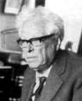
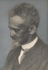
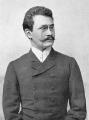
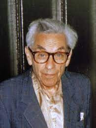
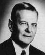
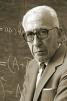
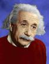
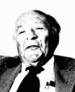

Table of Contents:
Mathematicians, physicists and engineers
Politicians and soldiers
Musicians, writers, poets and actors
Fighters and rescuers of the Shoah
Mass murderers of Jewish people-their deeds should be remembered and prevented from happening again
"Respectable" anti-semites
List of names (in alphabetical order)
Note:
Clicking on each picture to get the name and a brief description of
each individual.
        


Politicians and soldiers:


Musicians, writers, poets and actors:


Fighters and rescuers of the Shoah:


Politicians and soldiers:
Musicians, writers, poets and actors:
Fighters and rescuers of the Shoah:
Mass
murderers of Jewish people- their deeds should be remembered and
prevented from happening
again
The (slowly evolving) list below excludes the "obvious" perpetrators, like Hitler, Eichmann, and others, that most people know well. Instead, the emphasis is mostly on non-German perpetrators. The fantasy that Holocaust was an all-German operation still persists and allows many countries in Europe to cover up their anti-semitic past and present. At least one of the people listed below, Bogdan Khmelnitski, with others to appear later, supervised one of the most destructive anti-semitic murder sprees in history, centuries before the Holocaust, during the war for Ukrainian independence which ended with the unfication of Ukraine and Russia.


The (slowly evolving) list below excludes the "obvious" perpetrators, like Hitler, Eichmann, and others, that most people know well. Instead, the emphasis is mostly on non-German perpetrators. The fantasy that Holocaust was an all-German operation still persists and allows many countries in Europe to cover up their anti-semitic past and present. At least one of the people listed below, Bogdan Khmelnitski, with others to appear later, supervised one of the most destructive anti-semitic murder sprees in history, centuries before the Holocaust, during the war for Ukrainian independence which ended with the unfication of Ukraine and Russia.
I wish to
begin with a clarification. Unfairness towards Jewish people or Jewish
institutions based to a significant extent on their cultural, ethnic or
religious background constitutes anti-semitism. It makes no difference
if the individual perpetrating such ideas has Jewish friends or attends
Jewish cultural or political events. It is equally immaterial whether
they
are left, right or center politically. It is the deeds, not disclaimers
that
are of
the essence.


List of names: (in the alphabetical order)
Niels Abel, mathematician, proved, among many other things, that fifth degree polynomials over rationals cannot in general be solved by radicals, a result often attributed to Evariste Galois.
Shalom Aleichem, writer, author of "Tevye the milkman", the story that the movie Fiddler on the Roof is based on.
Mordechai Anielewicz, the military leader of the Warsaw Ghetto uprising in 1943.
Koffi Annan, the current secretary general of the United Nations pictured here with his friend Nasrallah, the leader of Hizbullah. Like many thirld world intellectuals, he believes that accusing Israel of war crimes at a drop of a hat is different from European myths involving the ritual slaughted of Christian babies, poisoning of wells, or spreading the plague. It is not...
Ion Antonescu, the head of the pro-Nazi Romanian government during the Second World War. A rabid anti-semite, Antonescu willingly involved Romania in the Nazi program to eliminate the Jewish people. The massacre of Odessa in 1941, personally approved by Antonescu, is one of the most brutal and visially appauling acts of genocide in the Second World War, according to eye-witnesses.
Fouad Ajami, author, international studies professor, expert on the Middle East, a living proof that tribalism does not always overpower logic and common sense.
Isaac Babel, writer, an insightful and colorful observer of Russian post-revolutionary realities, a committed Marxist eliminated by Stalin in the late 30s, the first man to be posthumously rehabilitated by Nikita Khruschev.
Stepan Bandera, Ukrainian nationalist leader, engaged in a brutal partisan struggle, mainly in the Carpathian region, against Poland and the Soviet Union, in the 1950s. This struggle was punctuated by the indiscriminate murder of civilians with racist, especially anti-semitic, overtones. Today, Stepan Bandera, as well as Bogdan Khmelnitski (see below), is a hero to many in Ukraine, the fact that does not bode well for the future of that country.
James Baker, former Secretary of State under George Herbert Walker Bush, the author of the famous words, allegedly uttered in a cabinet meeting: "**** Jews, they don't vote for us anyways". If Mr. Baker limited himself to this statement, he would not have made it to this web page. Unfortunately, his constant hounding and insensitivity to the State of Israel and other issues of deep concern to Jewish people "elevate" him, in my view, from being a mere asshole to the title of an anti-semite. Very recently, Baker again distinguished himself in the report on the Iraq war he co-authored with Senator Hamilton, another individual who may some day make this list. In this document, Baker suggested, in line with his views over the years, that Israel is largely responsible for all the American problems in the Middle East. During Middle Ages Jews were responsible for the Black Plague and related problems, today it is the Middle East. History seems to be remarkably consistent in a sad and pathetic kind of a way.
Abram Besicovitch, mathematician, one of the founders of geometric measure theory and the pioneer of sets named after him.
Abraham Blum, the last president of Bund and a hero of the Warsaw Ghetto uprising. He chose to go back into the ghetto in the
final days of the uprising to get as many people out as possible and died in the process.
Solomon Bochner, mathematician, a pioneer in geometric Fourier analysis.
King Boris III, king of Bulgaria, protected Bulgarian Jews from the Nazis.
Louis Brandeis, jurist, human rights advocate, the first Jewish supreme court justice.
Max Bruch, composer, the author of my favorite violin concerto.
Patric Buchanan, TV commentator and a rabid anti-semite who hides under a thin and silly cover of protecting the United States against the "Israeli lobby".
Robert Burns, poet, beautifully translated into Russian by Samuel Marshak.
Alberto Calderon, mathematician, worked closely with Antoni Zygmund on the development of singular integral operators, one of the pioneers of applying harmonic analysis in partial differential equations.
Jimmy Carter, former President of the United States, pictured here with his dear friend Yasser (do not say no-Sir) Arafat. Jimmy is a virtual personification of organic anti-semitism hiding under the cover of comical and impotent humanism. His recent book "Palestine: Peace, not Apartheid" differs from the Protocols of the Elders of Zion only in a matter of degree of depravity, not in substance.
Jacque Chiraq, the current President of the French Republic who is under the impression that borderline anti-semitic rhetoric will protect him from riots at home and will strengthen French position abroad. The idea is old and has never really worked for very long...
Casimir the Great, the greatest leader in Polish history, invited Jews to Poland and exhibited relative tolerance.
Hillary Clinton, former first lady and currently a senator from New York and a likely presidential candidate pictured above with Suha Arafat after the speech in which the latter accused Israel of poisoning water in the Palestinian territories... Unlike many people in New York and elsewhere, I am not fooled... If it looks like a duck and walks like a duck...
Eli Cohen, a linguist and a spy, was in the mid 60s a military liaison between Syria and Egypt (under a different name, of course).
Winston Churchill, prime minister of England during WWII, rallied the English speaking world against Nazi Germany.
Moshe Dayan, soldier and politician, the architect of the spectacular Israeli victory in 1967.
Lejeune Dirichlet, mathematician, one of the greatest number theorists of the 19th century, a pioneer in analytic methods in number theory.
Dwight Einsenhower, soldier and politician, the allied commander in WWII and later the president of the United States of America, one of the first to realize the significance of the Shoah and attract people's attention to it.
Albert Einstein, physicist, the pioneer of special and general relativity.
Paul Erdos, mathematician, a giant of geometric combinatorics and additive number theory.
Joseph Fourier, mathematician, an inventor of the Fourier integral who also solved the heat equation. Did not invent Fourier series- that was done by Dirichlet.
Evariste Galois, mathematician, died in a dual at the age of 22, invented Galois correspondence between field extensions corresponding to roots of polynomials and the associated Galois groups.
Carl Gauss, mathematician and physicist, the pioneer of one of my favorite concepts in mathematics- the circle problem.
Cardinal Glemp, Cardinal of Gdansk and the prelate of Poland. Over the years he specialized in accusing Jews of spreading alcholism in Poland and the usual related stereotypes. This is stark contrast to Karol Wojtyla who exhibited tremendous tolerance and sensitivity towards the Jewish people. As the Pope John Paul II, he was unable to significantly reverse the anti-semitic culture of the Vatican, but compared to Cardinal Glemp he is a shining beacon of tolerance and understanding.
Hirsh Glick, a Jewish poet who died in the Holocaust, the author of many beautiful and powerful poems, including one my favorites, Zog Nit Keynmol, the anthem of Vilna partisans.
Hannibal, the leader of the Carthageans in the second Punic war who came within a whisker of defeating Rome against all odds.
Felix Hausdorff, mathematician, the inventor of Hausdorff dimension and many other things.
Heinrich Heine, poet, author of "Deutchland", a great German nationalist epic, also an author of some wonderful short stories in Yiddish.
Rudolf Hoss, the commandant of Auschwitz-Birkenau Nazi concentration camp. His memoirs, written before his execution by the war crimes tribunal, full of pride with his murderous activities, give a chilling glimpse at the efficiency and perversity of the Nazi death machine.
Jesse Jackson, an African-American politican who ultimately undermined and betrayed the civil rights struggle by introducing a divisive anti-semitic element into a noble historic movement led by Martin Luther King and other decent people.
Marc Kac, mathematician, a giant of probability theory and mathematical physics, originally from Lvov, my home town.
Bogdan Khmelnitski, the leader of the Ukrainian cossacks in their struggle for indpendence from Poland in the 17th century. Khmelnitski was a rabid eliminationist anti-semite, responsible for the greatest slaughter of Jewish people outside of the Nazi Holocaust in the 20th century.
Martin Luther King, a great African American civil rights leader assisinated in 1968. He struggled against all racial unfairness, including anti-semitism. MLK was one of the few leaders at the time perceptive enough to realize that much of opposition to the State of Israel has anti-semitic roots at its core.
Abba Kovner, the legendary leader of Jewish partisans in Lithuania during the Second World War. An accomplished writer, Kovner won the Israel Prize for literature in 1970. He died in 1987.
Edmund Landau, mathematician, an author of beautiful work on distribution of lattice points in convex domains and the Riemann hypothesis. Landau was removed from his position due to a Nazi-inspired student revolt led by Teichmuller.
Lev Landau, physicist, a Nobel laureate in physics, a co-inventor of Ginzburg-Landau vortices, and many other things.
Semyon Lavochkin, engineer, designed the first Soviet fighter plane in WWII that was competitive with German fighter planes.
Primo Levi, a chemical engineer and and writer, perhaps my favorite author of all time.
Maimonides, a great Jewish religious scholar.
Samuel Marshak, a wonderful Soviet period writer of children's stories and a masterful translator from the English language into Russian. His translations of Robert Burns, Sir Arthur Conan-Doyle and others allowed several generations of Russian speaking people to enjoy these great authors.
Mearsheimer and Walt, a pair of scholars from the Harvard school of government who recently produced a rather silly anti-semitic tract on the alleged damaged caused to the United States by its association with the State of Israel. Calling these people respectable is a stretch, but given their academic positions, I suppose they qualify.
Golda Meir, prime minister of Israel, guided her country through some of its most difficult years, including the Yom Kippur war in 1973.
Hermann Minkowski, mathematician, the inventor of the Minkowski dimension, a pioneer in the field of convex geometry-the list goes on and on.
Felix Mendelsohn, composer, the author of my favorite symphony.
Yehudi Menuhin, violinist, one of the best violinists of all time.
Arthur Miller, playwright, the author of "Death of a Salesman" and many other wonderful plays.
Yoni Netanyahu, soldier, the only military casualty of a successfull Israeli raid on Entebbe in 1976 to rescue hostages help by Palestinian and German terrorists.
Hankus Netsky, musician, professor at the New England Conservatory, famous Yiddish singer.
Semyon Petlura, leader of Ukraine during the brief independence period following the Russian revolution. Responsible for numerous acts of mass violence against Ukrainian Jews.
Pope Pius XII, Eugenio Maria Giuseppe Giovanni Pacelli, made cynical deals with the Nazis and failed to take siginificant steps to stop or limit the scope of the Holocaust. The Vatican still refuses to release most of the documents pertaining to this gentleman's activities, though recent documents do make it clear that Angelo Giuseppe Roncalli, future Pope Jon XXIII, was extremely critical of Pius XII's policies during WWII and took steps to save Jews inspite of official Vatican inaction.
Yitzhak Rabin, prime minister of Israel, assasinated by Yigal Amir, a religious fanatic, for his role in the peace process.
Hyman Rickover, admiral, the father of the American nuclear submarine fleet.
Marcel Riesz, mathematician, a pioneer in interpolation theory and modern harmonic analysis.
Anwar Sadat, president of Egypt, the first Arab leader to make peace with Israel.
Saladin, the greatest Arab leader of all time, forced the crusaders out of Jerusalem and then held them off; exhibited much tolerance by the standards of the time.
Lorent Schwartz, A Fields medalist, developed theory of distributions.
Sir Walter Scott, writer, an author of Ivenhoe and Rob Roy, along with many other books.
Selahattin Ulkumen, Turkish diplomat who saved many Jews on the Greek island of Rhodos during the Second World War.
Peter Sellers, actor, my favorite comedic actor, author of the immortal line: "Does your dog bite?"
Naomi Shemer, composer, the author of "Yerushaleim Shel Zahav", perhaps my favorite song of all time.
Jan Sobieski, Polish King, perhaps the greatest Polish military commander, defeated all of Poland's neighbors at one time or another.
Robert Stevenson, writer, the author of "Treasure Island", "Black Arrow", and other beautiful books.
S. Sugihara, Japanese consul in Lithuania during WWII, saved thousands of Jews by handing out exit visas.
Alexander Vandegrift, Major-General in United States Marine Corp, commanded American forces at Guadalcanal, one of the most heroic chapters of the Pacific theater of WWII.
Raoul Wallenberg, a Swedish diplomat who saved thousands of Hungarian Jews during the Second World War. At the end of the war he was arrested by Soviet authorities, never to be seen again.
Hermann Weyl, mathematician, a giant of geometric analysis and analytic number theory.
Simon Wiesenthal, a Nazi hunter, reviled by many nationalist Ukrainian organizations for exposing unpleasant realities of past and present violent anti-semitic tendencies in that country.
Anotoni Zygmund, mathematician, one of the pioneers of singular operator theory.
figure in ancient Roman history. Mordechai Anielewicz, the military leader of the Warsaw Ghetto uprising in 1943. Albert Einstein, perhaps the greatest scientist of all time. Yoni Netanyahu, led the successful Israeli raid on Entebbe to rescue several hundred hostages help by Palestinian and German terrorists. Eli Cohen, an Israeli spy who was in the mid 60s, under a different name, a military liason between the governments of Syria and Egypt. Primo Levi, a writer and a chemical engineer, one of the best Italian writers of the 20th century. Simon Wiesenthal, a Nazi hunter, originally from Lvov, my home town, reviled by many nationalist Ukrainian organizations. Saladin, the great leader of the Arabs who exhibited considerable amount of religious tolerance. Maimonides, perhaps the greatest Jewish scholar of all time. Dwight Eisenhower, chief allied commander in WWII, and, later, president of the United States of American, one of the first ot recognize the significance of the Shoah and attract people's attention to it.
Third row: Hyman Rickover, admiral, one of the founders of American nuclear submarine fleet. Semyon Lavochkin, airplane designer, put togehter the first Soviet figher plane, LA5, that could successfully compete with Messerschmidt 109. Kng Boris III, king of Bulgaria during WWII, saved most of the Bulgarian Jews from the Nazis inspite of the fact that Bugaria was an ally of the Third Reich. Marc Kac, one of the giants of probability theory and applications of probability in mathematical physics. Max Bruch, composer, the author of my favorite violin concerto. Felix Mendelsohn, composer, the author of my favorite symphony (Scottish Symphony). Yehudi Menuhin, one of the greatest violinists of all time. Moshe Dayan, an Israeli general, one of the architects of the spectacular victory in 1967. Naomi Shemer, Israeli song writer, author of "Yersushaleim Shel Zahav". Solomon Bochner, mathematician, one of the pioneers of geometric Fourier analysis.
Fourth row: Marcel Riesz, mathematician, a pioneer of modern harmonic analysis. Lev Landau, a Nobel laureate in physics, a co-inventor of the Ginzburg-Landau vortices and many other things. Edmund Landau, mathematician, did some